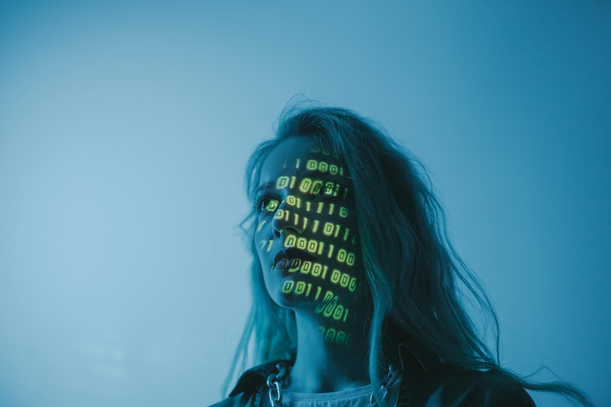

Yapay Zeka ile Fotoğraf Düzenleme: Geleceğin Sanatı Bugün
Günümüzde fotoğrafçılık, teknolojinin hızlı gelişimiyle bambaşka bir boyuta taşındı. Özellikle yapay zeka (YZ) teknolojilerinin fotoğraf düzenleme süreçlerine entegre edilmesi, hem amatör hem de profesyonel fotoğrafçılar için bir devrim yarattı. Peki, yapay zeka fotoğraf düzenleme sürecinde neler sunuyor? Hangi araçlar öne çıkıyor ve bu teknolojinin geleceği nereye gidiyor? Gelin, bu sorulara birlikte cevap arayalım.
Yapay Zeka Fotoğraf Düzenlemede Neler Sunuyor?
YZ destekli fotoğraf düzenleme araçları, kullanıcıların daha az çaba harcayarak daha profesyonel sonuçlar elde etmesini sağlıyor. İşte öne çıkan özellikler:
- Otomatik Geliştirme: YZ algoritmaları, bir fotoğrafın renk dengesini, kontrastını ve parlaklığını analiz ederek otomatik olarak düzenleyebiliyor. Bu özellik, özellikle zaman kısıtlaması yaşayan kullanıcılar için büyük bir kolaylık sunuyor.
- Arka Plan Düzenleme: YZ sayesinde bir fotoğrafın arka planını değiştirmek, kaldırmak veya bulanıklaştırmak sadece birkaç tıklama ile mümkün hale geldi.
- Portre Düzenleme: Cilt pürüzsüzleştirme, göz parlatma ve diş beyazlatma gibi işlemler artık saniyeler içinde yapılabiliyor. Ayrıca, doğal bir görünüm elde etmek için ince ayar seçenekleri sunuluyor.
- Nesne Kaldırma: Fotoğrafın istenmeyen unsurlarını kaldırmak, YZ’nin öğrenme algoritmaları sayesinde çok daha hassas ve etkili hale geldi.
- Stil Transferi: Bir fotoğrafın belirli bir sanat akımına veya estetik tarza dönüştürülmesi, YZ’nin yaratıcı yeteneklerinin en iyi örneklerinden biri.
Öne Çıkan Araçlar
Yapay zeka destekli fotoğraf düzenleme araçları arasında birkaç tanesi oldukça popüler:
- Adobe Photoshop ve Lightroom: Adobe’nin YZ özellikleri, özellikle otomatik seçim ve dolgu araçlarıyla dikkat çekiyor.
- Fotor: Kullanış kolaylığı ve AI destekli düzeltmeleri ile bilinir. Gelişmiş efektler ve filtreler sunar.
- Luminar Neo: Kullanıcı dostu arayüzü ve güçlü YZ özellikleriyle öne çıkan bir diğer yazılım.
- Canva: Basit düzenlemeler için ideal olan Canva, YZ destekli arka plan kaldırma gibi özellikler sunuyor.
- Remove.bg: Özellikle arka plan kaldırma işlemlerinde uzmanlaşmış bir araç.
- Pixlr: Hem profesyoneller hem de amatörler için uygundur. AI destekli birçok düzenleme aracı içerir.
Fotoğraf Düzenlemenin Geleceği
Yapay zeka ile fotoğraf düzenleme, gelecekte daha da kişiselleştirilmiş ve yaratıcı bir hal alacak. Şu anki gelişmeler, sadece başlangıç. İşte gelecekte bizi bekleyen bazı yenilikler:
- Gerçek Zamanlı Düzenleme: Fotoğraf çekimi sırasında, YZ’nin anında düzenleme yapması mümkün hale gelebilir.
- Daha Akıllı Algoritmalar: YZ, kullanıcıların stilini öğrenerek kişiselleştirilmiş düzenlemeler yapabilecek.
- Sesli Komutlarla Düzenleme: “Arka planı değiştir” veya “Daha sıcak tonlar ekle” gibi komutlarla düzenleme yapmak mümkün olabilir.
Fırsatlar
- Hızlı ve Etkili Düzenlemeler: YZ tabanlı uygulamalar, fotoğrafları düzenlemek için gereken süreyi çarpıcı bir şekilde azaltıyor. Birkaç tıklama ile şık filtreler uygulamak, renk dengesini optimize etmek veya istenmeyen nesneleri kaldırmak mümkün.
- Otomasyonun Gücü: Portre düzeltmeleri, gökyüzü değişiklikleri ve bokeh efektleri gibi karmaşık düzenlemeler, YZ sayesinde artık otomatik hale geldi. Bu, özellikle profesyonel çekimlerde zaman kazandıran önemli bir avantaj.
- Yaratıcılığı Destekleme: YZ, yaratıcılığı teşvik eden yeni araçlar sunuyor. AI destekli araçlarla oluşturulan sanatsal efektler veya özel filtreler, fotoğrafçılara farklı bir bakış açısı sunuyor.
- Çaylaklar için Profesyonel Sonuçlar: YZ ile amatör fotoğrafçılar bile profesyonel kalitede düzenlemeler yapabiliyor. Karmaşık teknik bilgiye gerek kalmadan, son derece etkileyici görüntüler elde edilebiliyor.
Riskler
- Gerçekliğin Manipüle Edilmesi: YZ, görüntüleri manipüle etme işleminde çok ileri seviyelere ulaştı. Bu, görüntülerin gerçekliliği konusunda ciddi sorular ortaya çıkarıyor ve toplumda güven sorunları yaratabiliyor.
- Etik Sorunlar: Bir fotoğrafın “ne kadar düzenlenebileceği” sorusu, etik açıdan önemli bir tartışma konusu. YZ’nin sunduğu bu gücün, belirli bir sınırın altında kullanılması gerektiği öne sürülüyor.
- Meslekler Üzerinde Baskı: YZ’nin sunduğu otomasyon, profesyonel fotoğraf düzenleyicilerin işlerini tehdit edebilir. Bu durum, sektör için yeni adaptasyon gereksinimleri yaratabilir.
- Gizlilik Endişeleri: YZ ile fotoğraf düzenleme, bireylerin görüntülerinin izinsiz bir şekilde kullanılmasına yol açabilir. Bu da gizlilik ve telif hakkı konularında ciddi sorunlar yaratabilir.
Sonuç
Yapay zeka ile fotoğraf düzenleme, fotoğrafçılık dünyasında bir dönüm noktası. İster bir profesyonel olun ister amatör, bu araçlar sayesinde yaratıcılığınızı bir üst seviyeye taşıyabilirsiniz. Teknolojinin bu büyüleyici yönünü keşfetmek için doğru zaman şimdi!
Eğer siz de YZ destekli araçları kullanıyorsanız, deneyimlerinizi yorumlarda paylaşmayı unutmayın!